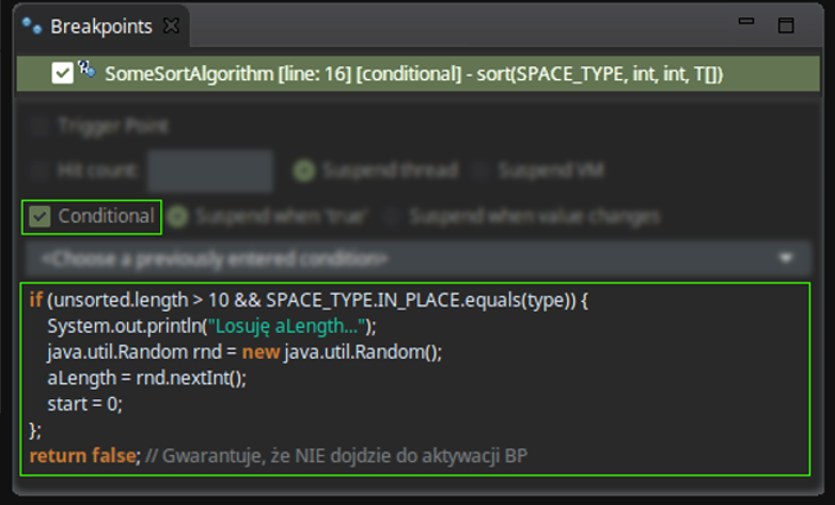

Debuggowanie
kodu w JVM
Ciut teorii
Debuggowanie JVM
> zatrzymanie JVM w wybranym momencie
> wykonywanie kodu linia po linii
> możliwość edycji i wgląd do zmiennych
> wplatanie / wykonywanie kodu
Eclipse vs JVM
Nic za darmo
-agentlib:jdwp=transport=dt_socket,suspend=y,address=localhost:36203...mają wpływ na wydajność pracy VM !
...debuggowanie = zawieszanie pracy VM !
LOKALNIE - TAK ; na 'PRODUKCJI' - NIE !
Breakpoint-y (BP)
...definiują zdarzenia prowadzące do wstrzymania wątku JVM i przejęcie sterowania przez debuggera
...najczęściej : zdarzenie dojścia do wskazanej linii kodu
...rzadziej : akcje odczytu/zapisu zmiennej klasowej lub wystąpienie wyjątku
Nawigacja
podczas debuggowania
| przejście do kolejnego breakpoint-u | |
| przejście do kolejnej linii kodu | |
| przejście w głąb kodu (wywołania metody) | |
| powrót z głębin kodu (do miejsca wywołania metody) |
Przykład 1
Podstawowa nawigacja
Udogodnienia
> Step filter ( ) : pozwala zdefiniować klasy lub całe pakiety, które będą pomijane podczas debuggowania (javax.*, java.util.*).
) : pozwala zdefiniować klasy lub całe pakiety, które będą pomijane podczas debuggowania (javax.*, java.util.*).
> Run to line () : pozwala na natychmiastowe przejście do wskazanej kursorem linii.
> Step into selection : pozwala 'wejść' we wskazaną kursorem metodę; np:
a.getB().getC().doIt().fire()
Widok 'Debug'
> JVM, których nasłuchujemy w trybie debugg
> wszystkie wątki działające w ramach JVM
> zawieszony wątek, w ramach którego debuggujemy wraz ze stosem ramek oraz lock-ami, które posiada
Drop to frame
Pozwala cofnąć się do początku bieżącej ramki: przywracany jest stan zmiennych a sterowanie wraca do 'początku' ramki.
! Efekty wywołań metod ('efekty uboczne') nie są magicznie cofane...
Przykład 2
Cofanie się do początku wszechrzeczy ramki
Przegląd stosu ramek
Podgląd zmiennych
> Widok 'Variables' : służy do inspekcji zmiennych oraz ich struktur
> Widok 'Expressions' : służy do automatycznej ewaluacji wyrażeń opartych na zmiennych
! Kontekstem tych widoków jest aktualna ramka; widoki zmieniają się wraz ze wsazaniem lub przejściem do innej ramki.
Udogodnienia
> Opcja 'Inspect' (również pod PPM)
> Opcja 'Instances count' (również pod PPM)
> Opcja 'All instances' (również pod PPM)
> Opcja 'All references'
> Przełączanie 'na' inne ramki ze stosu
> 'Details Formatter'
Przykład 3
Inspekcja zmiennych
Details Formatter
...jest to swoisty 'toString()' używany do wyświetlania użytecznego podglądu obiektu podczas debugowania.
Alternatywa dla: 'Object@ba8a1dc'
! Dostępne w 'Preferences' -> 'Debug' lub pod PPM podczas debuggowania
Modyfikacja zmiennych
w kontekście aktywnej ramki
...widok 'Variables'
'Variables' : mod. typu prymitywnego
'Variables' : prosta podmiana obiektu
'Variables' : złożona podmiana obiektu
'Variables' : mod. zmiennych obiektu
Wykonywanie kodu
w kontekście aktywnej ramki
...widok 'Display' lub pod PPM
Sandbox 'Display'
...jest miejscem, w którym możemy wykonać bądź zewaluować dowolny kod - również taki ze 'skutkami ubocznymi'.
...kluczowe są ikony [X] oraz [Y] służące do wykonania zaznaczonego w oknie kodu
! Opcja 'execute' jest też dostępna dla zaznaczonego tekstu w standardowym edytorze pod PPM
Force return
...pozwala wymusić natychmiastowe zwrócenie wskazanej wartości przez aktywną metodę (ramkę)
! Opcja 'force return' jest też dostępna pod PPM w kilku miejscach dla metod typu 'void'
Breakpointy cz.II
Breakpointem, poza przejścia do konkretnej linii kodu, może być:
> dostęp lub modyfikacja zmiennej klasowej
> wystąpienie wyjątku wskazanego typu
'Watchpoint'
śledzenie dostępu do zmiennej
! Dodanie takiego BP jest identyczne do standardowego - dwuklik; różnicą są opcje oraz ikonka
'Exception BP'
reakcja na wyjątek
! Dodanie tego BP jest możliwe jedynie w widoku 'Breakpoints'; szukaj takiej ikony: [X]
Przykład X
Nietypowe breakpointy
Warunkowe BP
Warunek przypisany do BP musi być wyrażeniem, które ewaluuje się do wartości true / false.
Do zatrzymania JVM dojdzie jedynie gdy warunek zostanie spełniony!
! Warunek można dodać we 'właściwościach' BP dostępnych w widoku 'Breakpoints' lub pod PPM symbolu BP
! Warunki mogą posiadać skutki uboczne; mogą być blokiem kodu zakończonym wyrażeniemreturn true/false.
Przykład X
...z użyciem warunków
Zdalne debuggowanie
Ręczne przygotowanie debbugera:
> uruchomienie dowolnego JVM z odpowiednimi parametrami
> połączenie do JVM klientem - debbugerem czyli Eclipsem
Parametry VM: -agentlib:jdwp=transport=dt_socket,suspend=y,address=36203Przykład X
połączenie do działającej JVM z opcją debbug
Przykład Y
połączenie do Wildfly / JBoss
zakończone problemem ze źródłami
Problemy ze źródłami
> gdy, na zdalnej JVM, przejdziemy do linii kodu, którego nie posiadamy w Eclipse
> gdy posiadamy inną wersję kodu względem tego po którym nawigujemy w zdalnej JVM
Rozwiązanie: dodanie źródeł w sekcji 'Source Lookup'
TRIKI
TRIK Automatyczne wykonywanie kodu w BP
> Warunki dla BP mogą być blokami kodu - na ich końcu nalezy zwrócić true lub false.
> Kod przed instrukcją return może być dowolny.
> Gdy blok będzie zwracał na sztywno false - nie dojdzie do zatrzymania JVM ale pozostały kod z bloku automatycznie zostanie wykoanny!
Przykład
Automatyczne wykonywanie kodu w BP
TRIK Trigger BP
> Warunki dla BP mogą być blokami kodu - na ich końcu nalezy zwrócić true lub false.
> Kod przed instrukcją return może być dowolny.
> Gdy blok będzie zwracał na sztywno false - nie dojdzie do zatrzymania JVM ale pozostały kod z bloku automatycznie zostanie wykoanny!
Przykład Wildfly
plus wykonywanie kodu - generalnie całość! Plus źródła do Hiberante np albo sterownika Postgresa!